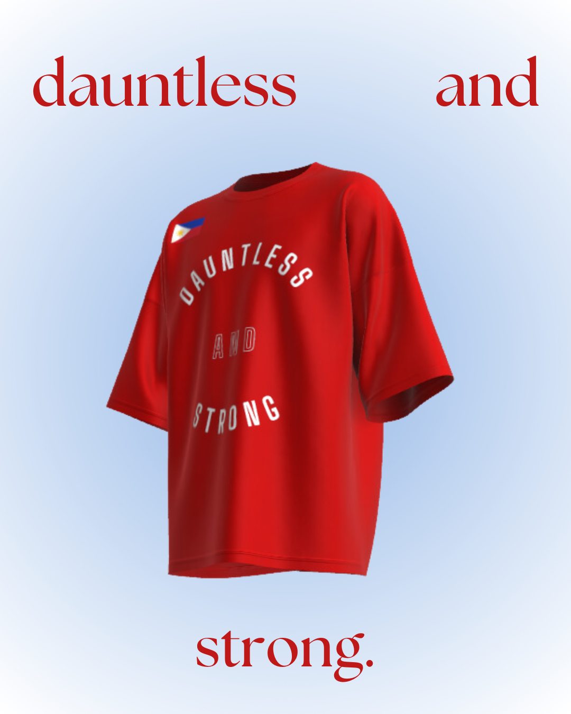
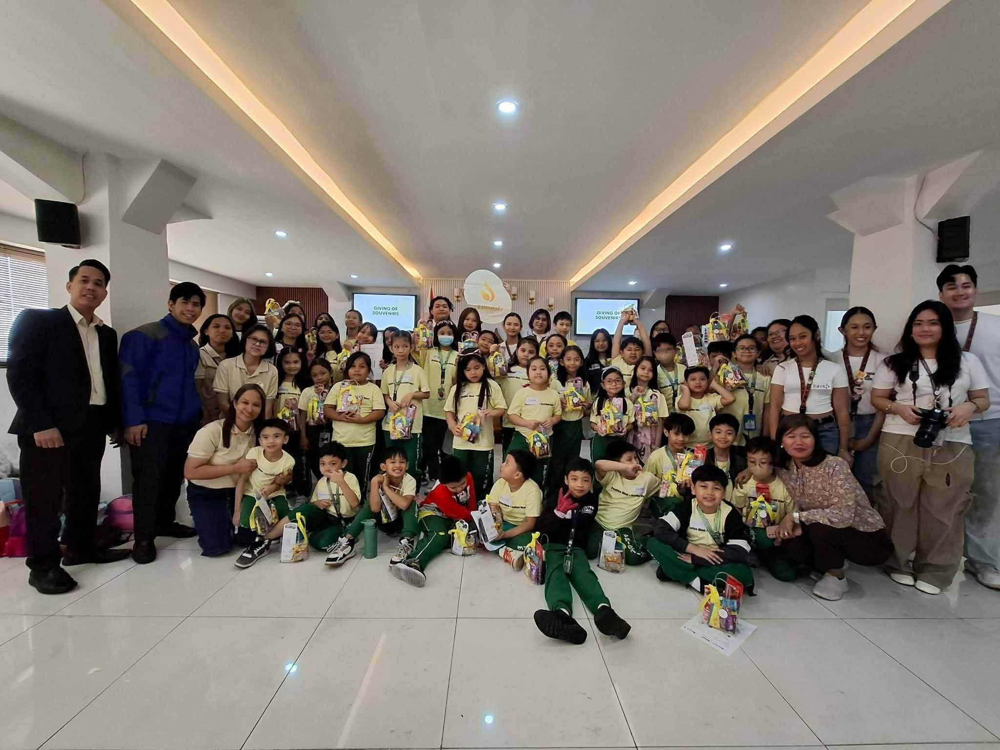
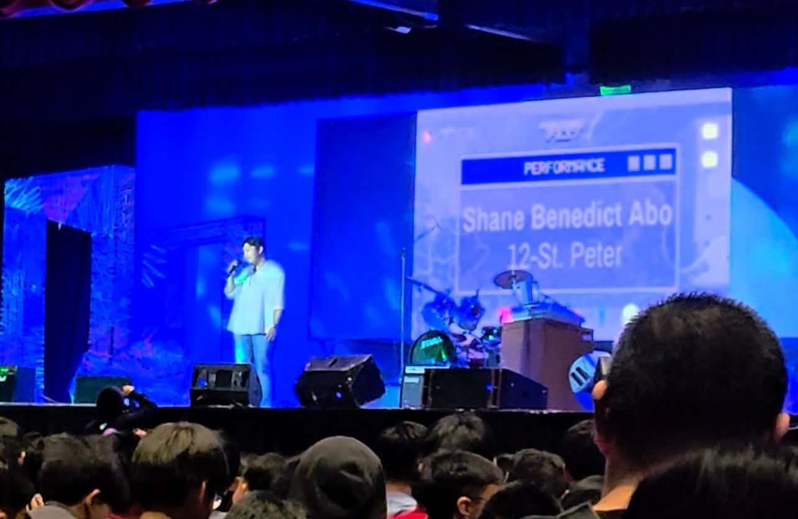

Music & Singing
Listening to music, discovering artists, and improving my vocals.
MULTIMEDIA STUDIES • CREATIVE PORTFOLIO
A Multimedia Studies student who enjoys turning ideas and experiences into meaningful creative work.
Explore my projectsA LITTLE INTRODUCTION
I'm Shane Abo, a second-year BA Multimedia Studies student. I enjoy exploring the ways creativity and technology come together through digital content, design, and storytelling.
Outside of school, I spend my time enjoying music, singing, basketball, and fitness. I'm always interested in learning something new and finding ways to express ideas creatively.
“Vita Dolce Moderato” — Sweet Life in Moderation.
WHAT I ENJOY
Listening to music, discovering artists, and improving my vocals.
Staying active, training, and keeping a connection to the game.
Exploring visual ideas and creating digital experiences.
SELECTED EXPERIENCES & CREATIVE WORK
A few projects and experiences that reflect my interests, creativity, and learning.

BRANDING • ENTREPRENEURSHIP
A clothing brand I co-founded, creating shirts inspired by Claret School of Quezon City. This project introduced me to the creative side of branding and building a clothing concept.

NSTP • COMMUNITY OUTREACH
As part of our NSTP initiative, we sold ice candies to raise funds for our outreach program. The funds supported our visit to Pristine Heritage Academy, where we became teachers for a day and shared a learning experience with the students.

MUSIC • LIVE PERFORMANCE
I performed at Music Fest 2025 at Claret School of Quezon City, my former school. It was my first time performing in front of an audience, and I sang a cover of “Ikaw Lang” by Nobita. I was nervous, but it became a memorable first step for me.
LET'S CONNECT
Thanks for taking the time to explore my portfolio. Feel free to reach out!